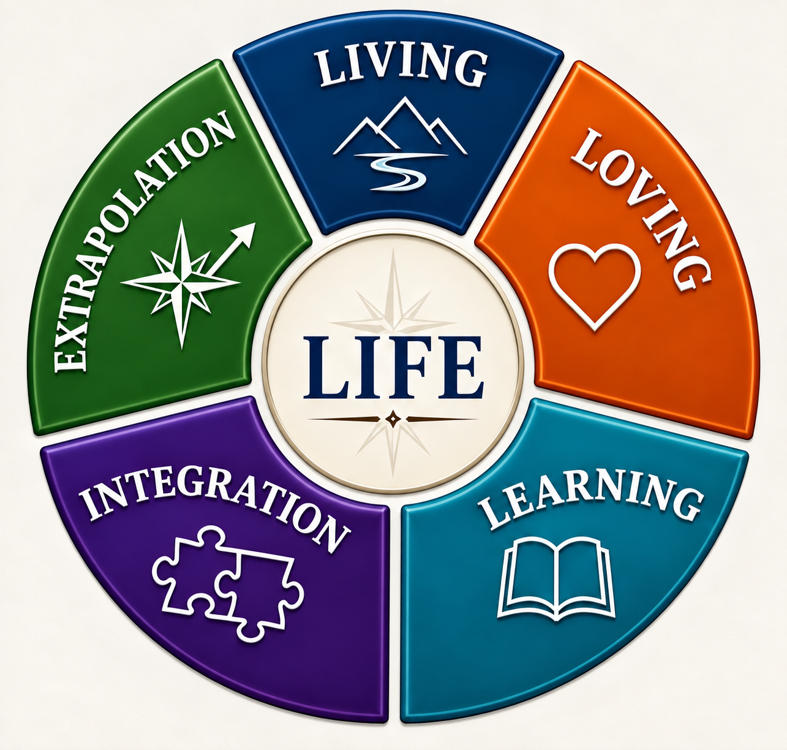

Living
Experiencing life through work, service, adventure, challenge, and everyday moments.
My writing draws from a lifetime of experience—work, military service, family, relationships, curiosity, and reflection. It comes from living and learning, bringing experiences and lessons together to better understand what was, and sometimes carrying those insights forward to imagine what might be.

Published poems and current poetry projects.